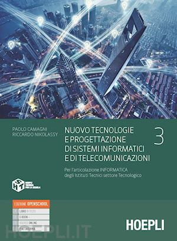
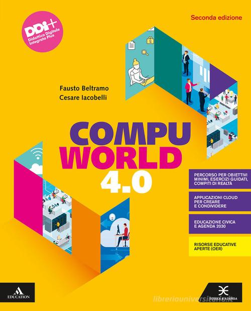
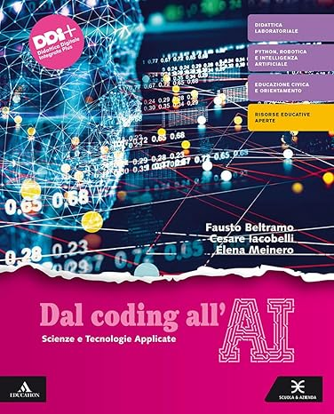

-

TPSI 3
Obiettivo del corso è fornire le basi teoriche e pratiche per l'applicazione delle tecnologie informatiche nella codifica dell'informazione digitale, l'identificazione e l'analisi dell'organizzazione e delle funzionalità dei principali componenti di un sistema operativo. Le conoscenze e competenze acquisite sono finalizzate alla capacità di scegliere un determinato ambiente di sviluppo e alla definizione di tecniche e metodologie di organizzazione del progetto di sistemi informatici a partire dal ciclo di vita del software e del sistema informativo. In particolare, è previsto lo studio delle codifiche e rappresentazioni delle informazioni digitali e della teoria dei sistemi operativi.
-

TPSI 4
Processi sequenziali e paralleli: Il modello a processi - Risorse e condivisione - I thread o “processi leggeri” - L’elaborazione concorrente - La descrizione della concorrenza. Comunicazione e sincronizzazione: La comunicazione tra processi - La sincronizzazione tra processi - I semafori - Applicazione dei semafori - Il problema dei produttori/consumatori - Il problema dei lettori/scrittori - Il problema del deadlock - I monitor - Lo scambio di messaggi. I requisiti software: La specifica dei requisiti - Raccolta e analisi dei requisiti - Attori, casi d’uso e scenari - La documentazione dei requisiti. Documentazione del software: La documentazione del progetto - La documentazione del codice - Il controllo delle versioni dei documenti e del software. Testing e debugging di un programma.
-

TPSI 5
Obiettivo del corso è fornire le basi teoriche relative alle architetture di rete e formati per lo scambio dei dati nelle applicazione distribuite. Fornire le conoscenze teoriche e pratiche per realizzare API Rest su HTTP. Comprendere le basi teoriche relative a socket e comunicazione con i protocolli TCP/UDP La didattica laboratoriale prevede la realizzazione di applicazioni distribuite client-server: lato frontend in HTML/CSS e vanilla Javascript, lato backend in NODE.JS con relativa interazione con database SQL. Nuove tipologie di database: i database NoSQL.
-

INFORMATICA
Lo scopo del corso è fornire le conoscenze adeguate per padroneggiare gli strumenti informatici con cui i ragazzi si troveranno a lavorare quotidianamente: gli strumenti di Office Automation e gli applicativi della piattaforma G Suite. Vengono tratti, oltre agli argomenti teorici di base (codifica delle informazioni, operazioni binarie e relative conversioni tra le diverse basi) argomenti di sicurezza in rete, privacy e diritti d'autore.
-

TEC. INFORMATICHE
Il corso riprende i fondamenti di informatica affrontati al primo anno: sistemi di numerazione, algebra booleana, segnali, sistemi e modelli, Excel e Access con l’obiettivo di consolidare ciò che è stato appreso nel 1° anno e di ripartire con una classe omogenea. Il progetto didattico mette al centro l’attività pratica e laboratoriale su temi scelti e ben sviluppati, declinando al massimo il concetto di scienze e tecnologie applicate. Gli argomenti sono proposti con attività concrete per la risoluzione di problemi. I laboratori di programmazione sono dedicati interamente alla programmazione in Python